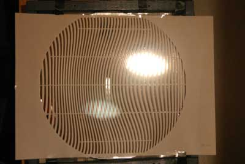
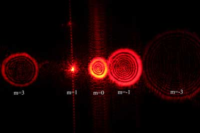
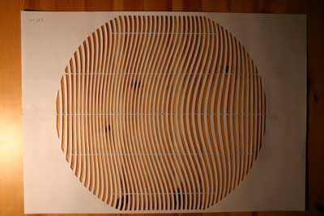
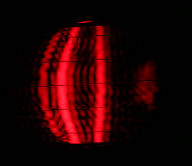
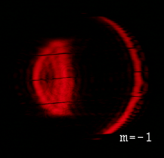
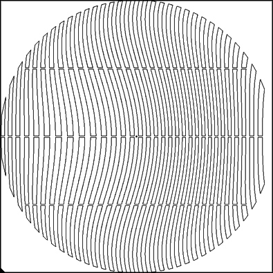

by Mauritz Andersson
Last updated: Dec 6, 2012
Relesed as Open Source (MIT License): Mars 31, 2015
This page describes a method for a Foucault null test using a computer generated holographic mask in front of the mirror.
When illuminated by a point source at the center of curvature of the mirror the mask produces a set of converging wavefronts corresponding to different diffraction orders. The zero order diffraction gives the same wavefront as without a mask. The first order diffraction (on one side) has a spherical abberation corresponding to the desired parabolic mirror but with a negative sign. This produces a perfect spherical wavefront if the mirror is a perfect paraboloid.
Here you can see what the various diffraction orders look like when seen through a eyepiece. The m=0 order is the unmodified wavefront from the mirror. The m=1 order has the compensating spherical abberation and should therfore focus to a point. The m=-1 order has double spherical abberation. In addition weaker order with m=+-3 can bee seen.
This is admittedly a little tedious, but with a sharp scalpel it can be done in a reasonable time.
The mask can be printed on ordinary paper and reinforced with tape before being cut. Better is to use a slighty stiffer paper to print on. The horizontal connections between the fringes serve to give rigidity to the mask.
The small center black square serves as a reference point for alignment.
The testing procedure is similar to the ordinary Foucault test. The difference is that a (reasonably) monochromatic light source with a known wavelength has to be used. It can be a point source or a narrow slit.
One good light source is a laser pointer without the collimation lens, or with an additional small lens for increasing divergence.
WARNING: Take extreme care when using lasers. The maximum power that should reach the eye is less than 1 mW and only if you then by reflex close the eye in a fraction of a second. So, do not stare into such a beam. You absolutely have to attenuate the beam by modifying the control circuit or use a dense filter or both.
Alternatively, a normal LED can be used provided that the emitted wavelength range is within the limit shown when the mask is computed below.
The big difference is that the knife edge for testing the returning wavefront now has to be a slit instead. The slit size has to be small enough that the mask cutouts are not resolved when looking through the slit, but not too small since then the resolution is hampered. A good size is 100-200 microns (0.1-0.2 mm). The slit can be made with two razor blades. Make the slit adjustable in width. Look through the slit at the mask from the same distance as when testing the mirror (radius of curvature) and then adjust the slit width just small enough that the mask cutouts are not resolved.
The testing x-y stage can be simpler compared to a Foucault stage since no measurements has to be made. I can be either moving or stationary light source. However, stability is as important.
With the test slit well inside the focus the test is like an inverted wire test. You will see three bright lines of different straigthness when moving the slit sideways. (Further to the side, additional higher order lines can be seen) The middle (and brightest) line is what you would see without the mask. One will have stronger curvature and the other (here the right line, m=1) should be straight if the mirror is perfect. See left animation below. (The test mirror is overcorrected and the rightmost line is not perfectly straight...)
In the right animation below you can see how it looks when at best focus for the m=1 line. It should behave as the null you would see in a spherical mirror. (Again, for the present mirror it doesn't, the overcorrection is apparent. And a small central hill is present.)
  Here you can submit a request to compute a mask for your mirror. The bigger the slit size, the better the spatial resolution but also more fringes to cut out... A good compromise is probably a slit size of 0.2 mm.
Do not use too small slit since you will get low resolution when looking throug it at the mirror. The maximum period of the mask fringes, meaning the width of the widest fringes is about the resolution to expect. The smallest useful slit is probably around 0.1 mm.
Note: radius of curvature = focal length * 2.
Displacing the mask introduces coma in the wavefront but this could also be used to find the optical center of the paraboloid if it is not the same as the mechanical center of the glass.
In principle you do not need to cut a mask for the entire mirror, but can make do with a central horizontal portion of the mask.
A HeNe laser has a wavelength of 632.8 nm. For laserpointer you have to check the datasheet since they vary a bit among manufacturers. If you have a mirror which deviates less than a wavelength from a sphere you could consider using a LED, check the the datasheet for the spectral width of the light, it is typically around 40 nm.
Mail me at mauritz_(at)_xiluma.se
Or discuss the topic at the atm_free or atm mail-list: